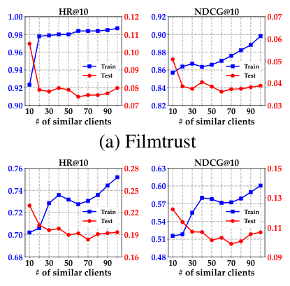
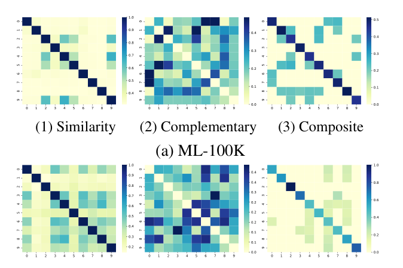

Beyond Similarity: Personalized Federated Recommendation with Composite Aggregation (超越相似性：基于复合聚合的个性化联邦推荐)
- 会议/期刊: TOIS 2026
- 作者与机构: Honglei Zhang, Haoxuan Li, Jundong Chen, Sen Cui, Kunda Yan, Abudukelimu Wuerkaixi, Xin Zhou, Zhiqi Shen, Yidong Li（北京交通大学、北京大学、清华大学、南洋理工大学）
- 推荐链路定位: 召回（联邦化 item embedding 表聚合）
- 研究方向: 去偏公平、可信隐私与工业架构 / 冷启动与长尾推荐
- 论文原文: https://arxiv.org/abs/2406.03933v1
- 开源代码: https://github.com/hongleizhang/FedCA
TL;DR (1分钟核心速览)
联邦推荐（FR）借用视觉联邦的“相似客户端加权聚合”，但 FR 模型是一对一的 item embedding 表：聚合只会反复强化已训练的 embedding 行，未交互行（灰色行）始终得不到更新，形成 embedding skew。本文提出 FedCA，把聚合权重同时约束在“模型相似性”与“数据互补性”上，并将权重求解写成可闭式求解的凸二次规划。在 PMF/NCF 双骨干、四个真实数据集、Leave-One-Out + 采样排序协议下，ML-100K 上 HR@10 达 0.8738（相对最强基线 PFedRec 提升 20.5%），NDCG@10 提升 63.4%。
Background & Motivation (背景与核心矛盾)
- 主流范式: FCF/FedAvg 全局平均或按数据量加权，PerFedRec 聚类聚合，FedAtt 注意力聚合，pFedGraph 图学习相似度——本质都是“相似客户端获得更大权重”的相似性假设。
- 前人局限: ①视觉联邦的骨干是结构化参数（CNN 卷积核），每个参数都参与所有样本的前向，而 FR 的 embedding 表是稀疏行访问，客户端只更新自己交互过的行；②因此相似性聚合在 FR 上退化为“对已训练行的重复强化”，对未见 item 无任何知识注入，测试集泛化反而随聚合客户端数增加而下降。
- 核心洞察 (Key Insight): 把异构性分解为 \(p(\boldsymbol{x},\boldsymbol{y})=p(\boldsymbol{x})p(\boldsymbol{y}|\boldsymbol{x})\)：相似性聚合只对齐条件分布\(p(\boldsymbol{y}|\boldsymbol{x})\)，却抹掉了边际分布\(p(\boldsymbol{x})\)的差异；而\(p(\boldsymbol{x})\) 的差异正是“互补信息”所在，可用于补齐未训练行。
- 本文切入点: 在同一个目标里同时约束相似（对齐条件分布）与互补（保留并利用边际分布差异），让聚合既能强化已训练 embedding、也能更新未训练 embedding。

Method (核心方法设计)
1. 整体框架 (Overall Architecture)
每轮服务器先向客户端下发聚合后的 item embedding，客户端用本地交互数据以 BCE 损失训练私有 user embedding \(\boldsymbol{p}_u\)与个性化 item 表\(\mathbf{Q}_u\)，仅上传\(\mathbf{Q}_u\)；服务器据上传的 embedding 计算两两相似度\(\sigma(\cdot)\)与互补度\(\phi(\cdot)\)，为每个客户端解一个小规模凸二次规划得到个性化权重\(\boldsymbol{w}_u\)，再聚合下发；客户端推理前用插值把上一轮本地表与当前全局表做空间对齐，最后内积打分。
flowchart TD
A["客户端 u: 本地交互 D_u (BCE + 4 负采样)"] --> B["本地训练: 私有 p_u + 个性化 Q_u"]
B --> C["上传 item embedding Q_u"]
C --> D["服务器: 相似度 σ(Q_u,Q_v) + 互补度 φ(X_u,X_v)"]
D --> E["凸 QP 求解复合权重 w_u (Eq.4)"]
E --> F["下发 Q_g=Σ_v w_uv Q_v 并插值对齐"]
F --> G["本地内积打分 r̂_ui"]2. 关键设计拆解 (Key Designs)
-
复合聚合的统一优化目标：把服务器聚合与本地训练写进同一目标，权重受相似、互补与数据量三方约束： \(\min_{\{\boldsymbol{p}_u,\mathbf{Q}_u,\boldsymbol{w}_u\}}\sum_{u=1}^{n}\big[\mathcal{L}_u+\alpha\sum_{v}\mathcal{F}_s(w_{uv};\mathbf{Q}_u,\mathbf{Q}_v)+\beta\sum_{v}\mathcal{F}_c(w_{uv};\mathcal{D}_u,\mathcal{D}_v)\big],\ \text{s.t. } \boldsymbol{1}^{\top}\boldsymbol{w}_u=1,\ \boldsymbol{w}_u>0\)。 服务器无法访问 \(\mathcal{L}_u\)，故用相对数据量\(p_v\)做代理，得到可解形式\(\min_{\boldsymbol{w}_u}\sum_v (w_{uv}-p_v)^2+\alpha (w_{uv}-\sigma(\mathbf{Q}_u,\mathbf{Q}_v))^2-\beta w_{uv}\cos\phi(\boldsymbol{X}_u,\boldsymbol{X}_v)\)。直觉：三项都是\(w_{uv}\) 的二次/线性项，权重自然在“数据量—相似—互补”之间取平衡点。
-
相似项与互补项的算子设计：相似项取 \(\mathcal{F}_s=(w_{uv}-\sigma)^2\)，\(\sigma=1/(1+\lVert\mathbf{Q}_u-\mathbf{Q}_v\rVert_2)\)，保证相似模型权重上抬；互补项用中间特征代理本地数据——对交互 item 子表\(\mathbf{Q}^s_u\)做 SVD 取前\(k\)个左奇异向量得\(\boldsymbol{X}_u\)（既降维又抵御输入重构攻击），并以主角度度量\(\phi(\boldsymbol{X}_u,\boldsymbol{X}_v)=\frac{1}{k}\sum_{l=1}^{k}\arccos(\boldsymbol{x}^l_u{}^\top\boldsymbol{x}^l_v)\)，\(\mathcal{F}_c=-w_{uv}\cos\phi\)。当两客户端子空间正交时互信息最小、互补性最大，权重被抬高——相当于用“未被该客户端覆盖的 item 语义方向”去更新其未训练行。
-
训练目标、负采样与推理效率：本地损失为 BCE，\(\mathcal{L}_u=-\sum_{(u,i)\in\mathcal{D}_u}r_{ui}\log\hat{r}_{ui}+(1-r_{ui})\log(1-\hat{r}_{ui})\)，每正样本均匀采样 4 个负例；刻意不加 FedProx 式近端项（消融显示近端项反而掉点），以保留强个性化。推理时用\(\mathbf{Q}^t_u=\rho\mathbf{Q}^{t-1}_u+(1-\rho)\mathbf{Q}^t_g\) 缓解“user 向量滞留上一轮、item 向量已换轮”的空间错位。计算开销全在服务器（QP 用经典凸求解器），客户端复杂度与 FCF 同阶。
Experimental Setup & Evaluation Protocol (实验设置与评估协议)
- 数据集与预处理: 三个显式反馈电影数据集（评分 \(>0\) 二值化为 1）加一个隐式短视频数据集，每个用户视作一个独立客户端，天然高异构：
| 数据集 | #Users | #Items | #Interactions | 稀疏度/密度 | 特征/场景说明 |
|---|---|---|---|---|---|
| ML-100K | 943 | 1,682 | 100K | 6.30% | 电影，显式转隐式 |
| Filmtrust | 1,508 | 2,071 | 35K | 1.14% | 电影，显式转隐式 |
| ML-1M | 6,040 | 3,706 | 1M | 4.47% | 电影，规模最大 |
| MC-100K | ≈1,000 | ≈12.8K | 100K | ≈0.8% | 短视频，隐式反馈 |
- 数据划分与防穿越 (Splitting Strategy):
Leave-One-Out，每个客户端留最后一条交互作测试。 - 排名评测协议 (Ranking Protocol):
Sampled Ranking——测试正例与 4 个均匀采样负例（正负比 1:4）共同排序，报告 HR@10 与 NDCG@10，5 次重复取均值。 - 对比基线与超参设置: 8 个基线（Local、FCF、FedAvg、PerFedRec、FedAtt、FedFast、pFedGraph、PFedRec），骨干分别用 PMF 与 NCF 验证模型无关性；SVD 列数 \(k=4\)；\(\rho,\alpha,\beta\in[0,1]\) 逐数据集网格搜索。
Key Experimental Results (实验关键数据)
1. 主实验对比 (Main Results)
| Backbone / Model | ML-100K HR@10 | NDCG@10 | Filmtrust HR@10 | NDCG@10 | ML-1M HR@10 | NDCG@10 | MC-100K HR@10 | NDCG@10 |
|---|---|---|---|---|---|---|---|---|
| PMF + Local | 0.4128 | 0.2203 | 0.4760 | 0.2410 | 0.4264 | 0.2314 | 0.1246 | 0.0567 |
| PMF + FedAvg | 0.4878 | 0.2786 | 0.6517 | 0.5126 | 0.4912 | 0.2751 | 0.1295 | 0.0601 |
| PMF + PerFedRec | 0.4973 | 0.2797 | 0.6577 | 0.5247 | 0.4623 | 0.2622 | 0.1255 | 0.0599 |
| PMF + FedAtt | 0.4645 | 0.2558 | 0.6088 | 0.3359 | 0.4310 | 0.2168 | 0.0982 | 0.0445 |
| PMF + FedFast | 0.4984 | 0.2747 | 0.6527 | 0.5191 | 0.5061 | 0.2898 | 0.1278 | 0.0600 |
| PMF + pFedGraph | 0.5928 | 0.4025 | 0.6961 | 0.5430 | 0.7904 | 0.6347 | 0.1324 | 0.0605 |
| PMF + PFedRec | 0.7254 | 0.4648 | 0.7096 | 0.5629 | 0.8032 | 0.6519 | 0.1334 | 0.0621 |
| PMF + FedCA | 0.8738 | 0.7597 | 0.7725 | 0.5945 | 0.8348 | 0.7118 | 0.1351 | 0.0678 |
| NCF + PFedRec | 0.6931 | 0.5031 | 0.6732 | 0.5031 | 0.6826 | 0.4041 | 0.1422 | 0.0687 |
| NCF + FedCA | 0.8452 | 0.7444 | 0.6836 | 0.5099 | 0.7815 | 0.6662 | 0.1465 | 0.0782 |
| Improv.% (vs. 最强基线, PMF) | +20.5% | +63.4% | +8.9% | +5.6% | +3.9% | +9.2% | +1.3% | +9.2% |
2. 消融实验 (Ablation Study)
| 变体 (PMF 骨干) | ML-100K HR@10 | ML-100K NDCG@10 | ML-1M HR@10 | ML-1M NDCG@10 |
|---|---|---|---|---|
| 仅 \(\mathcal{L}_u\)（退化为 FedAvg） | 0.4878 | 0.2786 | 0.4912 | 0.2751 |
| \(\mathcal{L}_u+\mathcal{F}_c\)（仅互补） | 0.8431 | 0.6983 | 0.8049 | 0.6585 |
| \(\mathcal{L}_u+\mathcal{F}_s\)（仅相似） | 0.8653 | 0.7457 | 0.8103 | 0.6987 |
| \(\mathcal{L}_u+\mathcal{F}_s+\mathcal{F}_c\) | 0.8738 | 0.7597 | 0.8348 | 0.7118 |
| w/ 近端项（FedProx 式） | 0.8469 | 0.7274 | 0.8168 | 0.6801 |
| \(\rho=0.5\)/\(0.8\)/\(0.9\)/\(1.0\) | 0.6681 / 0.8738 / 0.8611 / 0.7922 | 0.4930 / 0.7595 / 0.7432 / 0.6329 | 0.6833 / 0.8278 / 0.8348 / 0.8008 | 0.4892 / 0.6949 / 0.7118 / 0.6918 |
3. 关键实验发现 (Key Findings)
- 相似与互补缺一不可，且互补不可被相似替代：仅相似聚合（\(\mathcal{L}_u+\mathcal{F}_s\)）把 ML-100K HR@10 从 0.4878 拉到 0.8653，仍低于完整模型 0.8738；而仅互补已达 0.8431，说明“更新未训练行”贡献了绝大部分增量（NDCG@10 从 0.2786 → 0.6983，约 2.5 倍）。
- 训练数据越稀疏，复合聚合收益越大：40% 训练数据时 FedCA 在 ML-100K、MC-100K 上领先幅度最大，而聚类式 PerFedRec 在 40% 设置下最差且训练曲线不稳——因为 K-Means 需人工选簇数且稀疏下相似度估计失真，而 FedCA 用统一损失平滑地“软选”相似客户端，无需调簇数。
- FR 任务应“去近端项 + 加插值对齐”：加 FedProx 近端项使 ML-100K HR@10 从 0.8738 降到 0.8469（NDCG 0.7597→0.7274），说明强个性化比向全局靠拢更重要；而推理期插值 \(\rho\)极敏感（\(\rho=0.5\)时 HR@10 仅 0.6681，\(\rho=0.8/0.9\) 最优），过大过小都破坏 user-item 空间一致性。

Highlights & Limitations (亮点、对比与审稿批判)
- 与代表作对比 (vs. Prior Work): 相比 pFedGraph/FedAtt 等只做相似性图/注意力加权，FedCA 首次指出 FR 的 embedding 表导致“skew”这一结构性差异，并引入互补性约束；相比 PerFedRec/FedFast 的硬聚类+簇间聚合，FedCA 把“选相似/选不相似”统一为凸 QP，避免簇数超参；相比 PFedRec 的双重个性化，本文不额外参数化打分函数，而以聚合算子为切入点，插件化接入任意骨干。
- 可迁移亮点: ①用 SVD 左奇异向量 + 主角度（\(\arccos\)内积均值）作为“隐私友好的数据互补性代理”，可直接迁移到跨域/多场景联邦迁移与冷启动物品表征补全；②推理期\(\rho\) 插值对齐全局 item 表与本地 user 向量的技巧，可复用于任何“部分参数全局同步、部分参数本地私有”的联邦模型。
- 审稿级局限批判: ①\(\alpha,\beta,\rho\)仍需逐数据集网格搜索，作者亦承认需自动化调权；②互补性代理完全建立在交互 item 子表 SVD 上，若客户端交互极少（< 4 条）则\(\boldsymbol{X}_u\) 估计不稳，本文未给出低交互客户端的分桶结果；③隐私讨论仅停留在“不上传原始数据”，SVD 表征与 QP 权重仍可能泄露交互频次，缺少形式化 DP 或攻击实验。
Rating (四维评分)
- 方法创新性 (Novelty): ⭐⭐⭐⭐ （把 FR 聚合从“相似性加权”重构为“相似+互补”双约束凸优化，问题识别（embedding skew）比算子本身更有价值）
- 评估协议与实验扎实度 (Protocol & Experiments): ⭐⭐⭐⭐ （四数据集 × 双骨干 × 8 基线 + 稀疏度曲线 + 三项消融较完整，但评测为 1:4 采样排序、非 Full-Ranking，且无显著性检验）
- 写作与数学规范度 (Clarity & Rigor): ⭐⭐⭐⭐ （从 \(p(\boldsymbol{x})p(\boldsymbol{y}|\boldsymbol{x})\) 分解推导互补性动机清晰，QP 退化关系说明到位；互补度主角度度量的理论依据偏启发式）
- 工业落地与复现价值 (Industrial & Practical Value): ⭐⭐⭐⭐ （服务器侧仅需小规模 QP、客户端开销与 FCF 同阶，代码已开源，适合端侧联邦召回落地；但每轮 \(O(n^2)\) 相似/互补矩阵计算在大规模客户端下需采样）